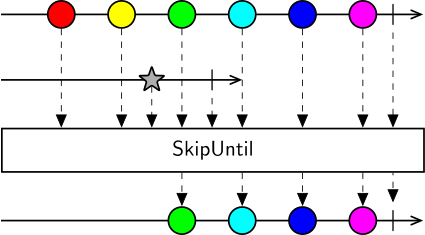

SkipUntil modifies the source sequence so that all elements are ignored until the second sequence produces a notification. At that time, SkipUntil will start emitting all remaining elements from the source sequence. SkipUntil is often used to create a dynamic start condition for an infinite sequence, e.g. start grabbing frames from a video camera when a key is pressed.
If the source sequence terminates before the second sequence produces a value, SkipUntil will terminate without emitting any elements.
Warning
SubscribeWhen is a similar operator which is often used to control the start of a sequence. Although often both SubscribeWhen and SkipUntil result in a similar sequence, SkipUntil will always immediately subscribe to the source sequence. This means that any initialization side-effects will be evaluated immediately. For hot sequences (e.g. camera) this might be advantageous, since any initialization costs are paid upfront, and new values are immediately ready to be consumed after the trigger. However, for cold sequences (e.g. video) this might lead to loss of data from the start of the sequence. For more about the difference between hot and cold sequences, see the section on temperature.